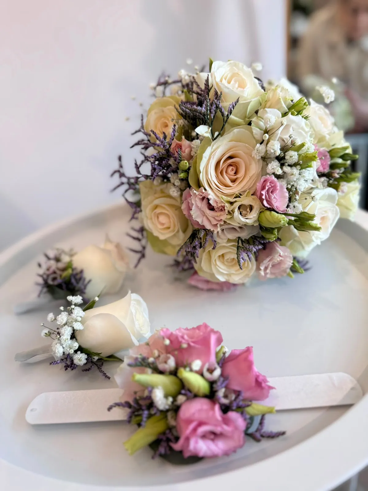
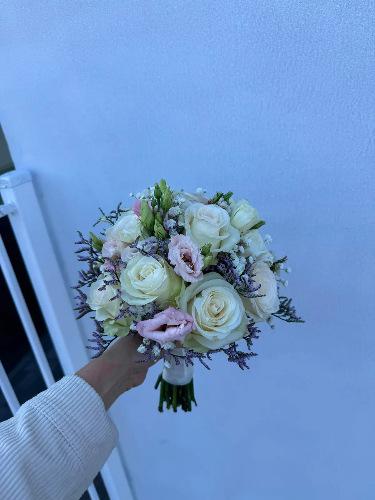
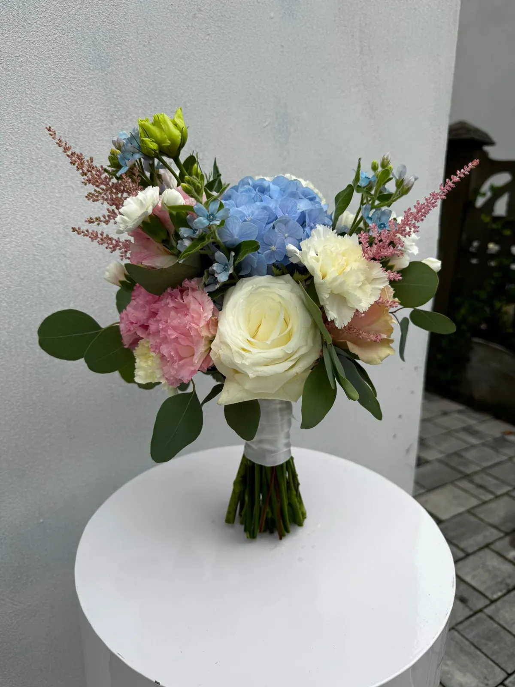
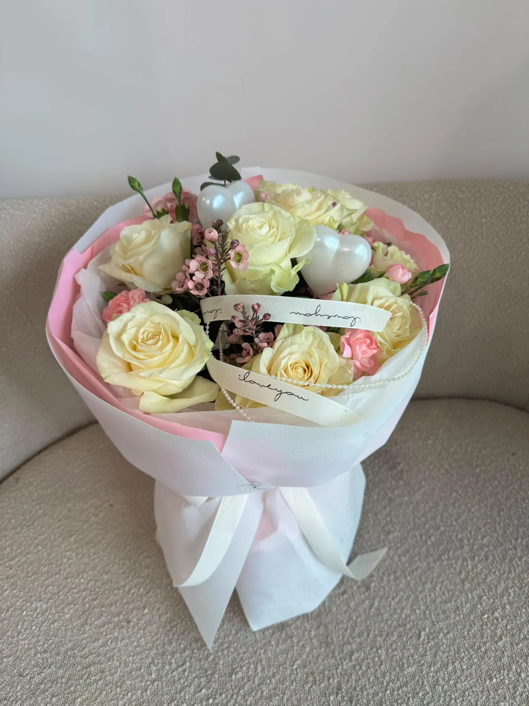
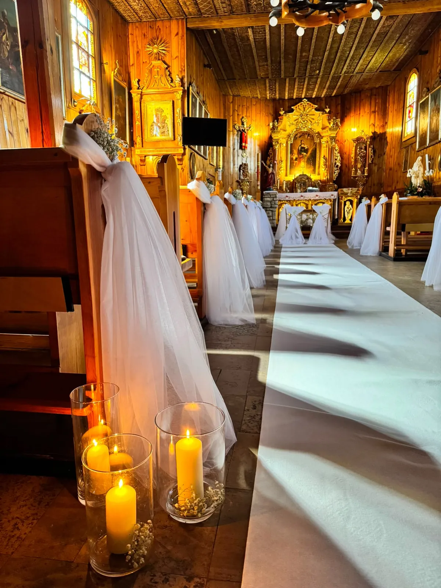
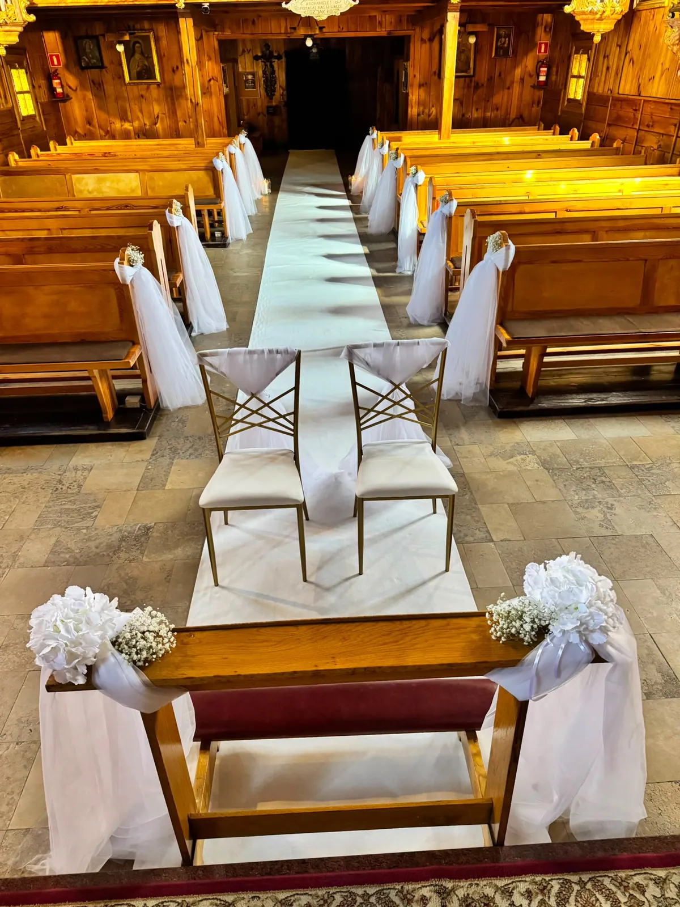
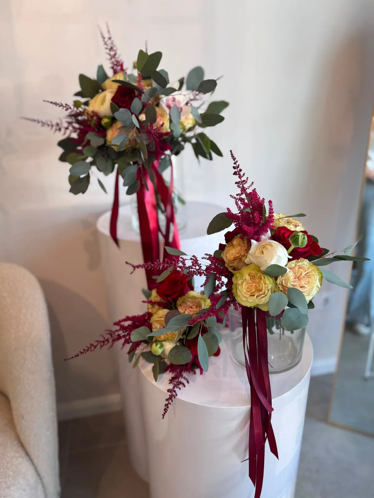
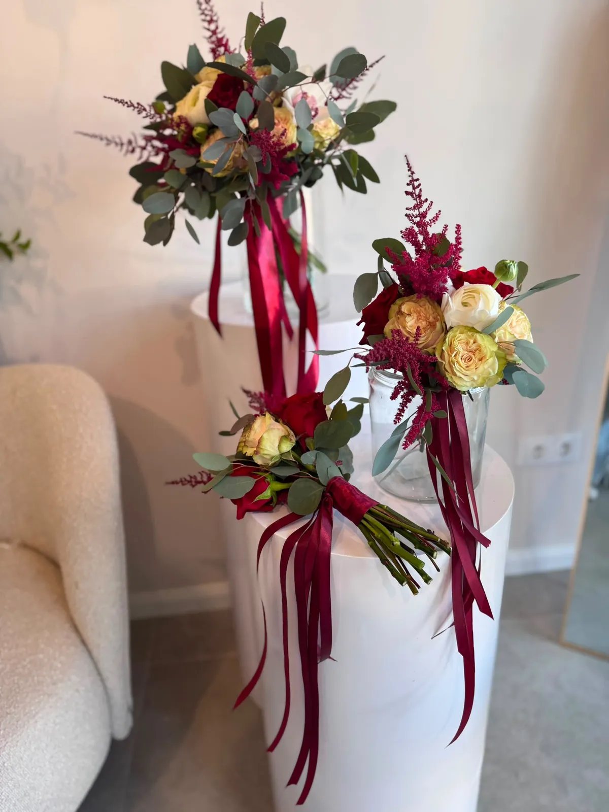

Twój dzień
w kwiatach
Tworzymy florystykę ślubną, która odzwierciedla styl Waszej uroczystości — od delikatnej bieli przez romantyczny róż po odważny burgund. Każdy bukiet, każda dekoracja — z myślą o Was.
Bukiety panny
młodej
Każdy bukiet ślubny tworzymy od nowa — dopasowując kwiaty, kolory i styl do sukni, charakteru ceremonii i gustów pary.



Kościół i sala
w kwiatach
Dekorujemy ławki, ołtarze, bramy i stoły weselne. Każda aranżacja sali jest unikalna i komponuje się w całość ze stylem całej uroczystości.




Co dla Was
robimy
Bukiet panny młodej
Od klasycznej wiązanki okrągłej przez kaskadowy bukiet ślubny po luźną kompozycję z dzikich kwiatów — tworzymy bukiet, który będzie idealnym uzupełnieniem sukni i stylu wesela.
Butonierki i opaski
Komplet florystyczny dla całej rodziny — butonierki dla Pana Młodego, świadków i ojców, opaski kwiatowe dla druhen. Spójny styl od pierwszego do ostatniego gościa.
Dekoracje kościoła
Dekoracja ławek, ołtarza, wejścia i bram. Białe tkaniny, girlandy zieleni, kompozycje kwiatowe — tworzymy atmosferę, która zachwyca od chwili wejścia do świątyni.
Dekoracje sali weselnej
Kompozycje stołowe, centerpieces, łuki kwiatowe, ściany kwiatowe i dekoracje bufetu. Styl spójny z bukietem i motywem przewodnim całego wesela.
Prosta droga do
pięknego ślubu
Konsultacja
Napisz do nas przez WhatsApp lub zadzwoń. Opowiedz o dacie, stylu i marzeniach. Zaczynamy od rozmowy.
Propozycja
Na podstawie rozmowy przygotowujemy propozycję kwiatów, kolorów i budżetu. Wszystko dopasowane do Waszej wizji.
Rezerwacja daty
Terminy ślubne rezerwują się z wyprzedzeniem. Zalecamy kontakt minimum 4–8 tygodni przed ceremonią.
Realizacja
W dniu ślubu wszystko jest gotowe na czas. Bukiet, dekoracje, każdy szczegół — dopracowany z pasją i miłością do kwiatów.
Zacznijmy tworzyć
Wasz dzień
Każde wesele jest inne. Każdy bukiet — wyjątkowy. Napisz do nas i opowiedz o swoim śnie o kwiatach.